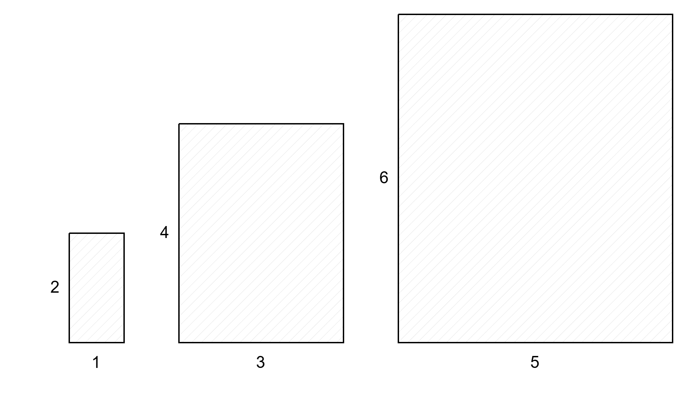
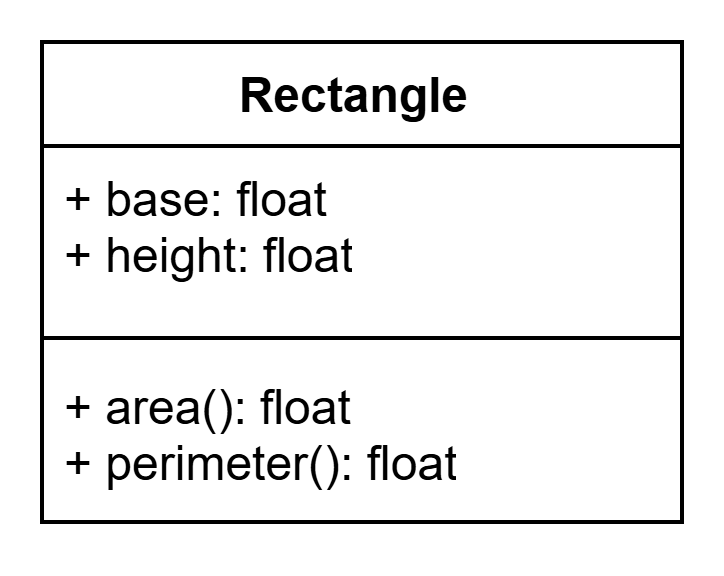

Unit 01: Basics
The 3 Rectangles Problem
Let’s dive right in with an example. Suppose we have three rectangles as shown in the figure below and we would like to find the area and perimeter of each rectangle.

The Naive Approach
A straightforward approach to this problem is to represent each rectangle as a tuple containing its base and height, and store these tuples in a list. To compute the area and perimeter of each rectangle, we extract the base and height from each tuple and apply the following formulas:
- Area = base × height
- Perimeter = 2 × (base + height)
1 2 3 4 5 6 7 8 9 | |
The OOP Approach
Now, let's see how using objects can simplify this problem!
Instead of using tuples, we create instances of a Rectangle class.
1 | |
Rather than manually calculating the area and perimeter, we simply ask each object for its area and perimeter!
1 2 3 4 5 6 7 8 | |
Key Takeaway
Notice the difference? In the OOP approach, we don’t need to know the formulas for area and perimeter - the logic for those are encapsulated within the object and abstracted away from us.
Abstraction and encapsulation is the practice of hiding complex implementation details and exposing only what’s essential to the user. Just as high-level languages abstract away machine code, OOP lets you focus on what objects do, not how they do it. This makes code easier to read, maintain, and reuse, while reducing complexity as programs grow.
In fact, you’ve already been using objects all along. In Python, almost everything is an object. Perhaps the object you have used the most and are familiar with are strings; python strings are objects, and you likely have used many of the string object methods like isalpha(), isdigit(), etc.
Have you ever wondered how those methods are actually implemented under the hood? Did you actually needed to know how it works under the hood?
Creating the Rectangle Class
Now that we have seen how to use a object, let's actually create one!
We start by declaring the class we want to create.
1 2 | |
Next, we define a special method called __init__, known as the constructor. The constructor is automatically called when a new instance of the class is created. Here, we set up the initial state of the object by assigning values to its attributes.
Attributes are variables that belong to an object and describe its properties. For a rectangle, we need its base and height, so we give it two attributes: base and height.
1 2 3 4 5 6 7 | |
Class vs Instance
Declaring a class defines the blueprint for creating objects. An instance is an actual object (item) created from that blueprint.
Finally, we implement the methods that will provide us with desired behaviors for our object.
1 2 3 4 5 6 7 8 9 10 11 12 13 14 15 | |
Class Diagram
To help visualize classes, we often use a class diagram. A class diagram provides a concise overview of all the attributes and methods a class contains.

In the diagram above is the class diagram for Rectangle. A class diagram typically consists of 3 rows in following template:
| ClassName |
|---|
| attributes: datatype |
| method(signature): return datatype |
Discussion
Discussion questions (please discuss these with your teacher!):
-
What is the difference between a class and an instance of a class?
-
What does it mean to say that a class abstracts something, and why is abstraction useful in programming?
-
What does the
selfkeyword refer to?